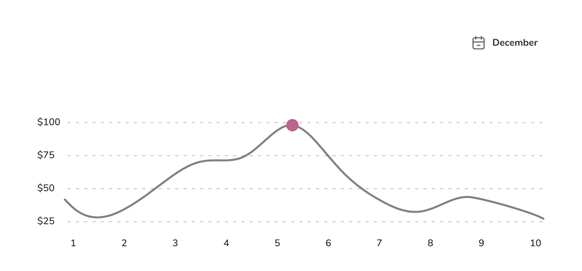
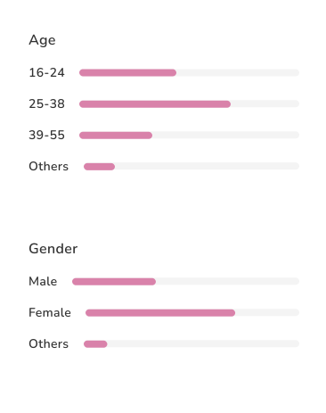

Data Visualization
Data elps us make informed decisions. Therefore, data should be clear; it should not be overly decorative and it should be presented in a meaningful way. Below are a few standards that we’ve set for telling visual data stories.
Charts
Stylistically, our charts and graphs draw inspiration from a more grown-up, editorial style.
Note
Use Curved lines to indicate actual trends in data. Use dotted to show data representation at that point of interaction.
Lines should be 3pts in weight and curved.
Meter Chart
Note
Data in these charts always add up to 100%. If there is more than one category represented, always break categories using sub-title text.
layout can be unique from chart to chart but the bars themselves always have a height (or width if vertical) that’s a multiple of eight (or four but that is the exception).
Limit representation to fewer than Five(5) categories. If you must represent more than Five categories, consider truncating data to include the top four categories and then include smaller data sets in an 'other' category
Palette
Categorical Color Combos
The colors for our charts come from our predefined categorical combo. When building a data story, Use the established combo for visual harmony and accessibility optimization. Feel free to use combo when creating multiple charts on a page.
Combo
Fly-Over
Overview
The fly-over should not only activate on hover. It should present itself when a highlightable portion of a chart is selectable. On mobile, a user should be able to tap on a portion of the graph to make it appear.
The fly-over is not always necessary but is recommended unless there’s another piece of the UI that highlights the selected data and ties those two things together.
Feb 01,2016
$16,006.12 from others
Flag
The flag is Peppercorn at 90% opacity. It should be centered at the data it points to and pinned to the highest reasonable point of a chart.
Pole
The flag is Peppercorn at 90% opacity. It should be centered at the data it points to and pinned to the highest reasonable point of a chart.